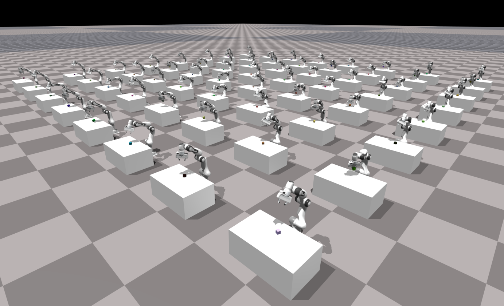

Simulation Setup
Isaac Gym provides a simulation interface that lets you create dynamic environments for training intelligent agents. The API is procedural and data-oriented rather than object-oriented. This facilitates efficient exchange of information between the core implementation written in C++ and client scripts written in Python. For example, rather than working with hierarchical collections of body and joint objects, Isaac Gym uses flat data arrays to represent the state and controls of the simulation. This makes it easy to work with the data using common Python libraries like NumPy, which provides efficient methods to manipulate multidimensional arrays. It is also possible to access the simulation data as CPU or GPU tensors that can be shared with common deep learning frameworks like PyTorch.(Isaac Gym提供了一个仿真接口，允许您创建用于训练智能体的动态环境。该 API 采用过程式和数据导向的设计，而非面向对象。这有利于在用 C++ 编写的核心实现和用 Python 编写的客户端脚本之间高效地交换信息。例如，Isaac Gym 不使用分层式的身体和关节对象集合，而是使用扁平数据数组来表示仿真的状态和控制。这使得使用 NumPy 等常用 Python 库轻松处理数据变得容易，NumPy 提供了高效的方法来操作多维数组。此外，还可以将仿真数据作为 CPU 或 GPU 张量访问，这些张量可以与 PyTorch 等常用深度学习框架共享。)
The core API, including supporting data types and constants, is defined in the(核心 API（包括支持的数据类型和常量）在 gymapi 模块中定义：) gymapi module:
from isaacgym import gymapi
All of the Gym API functions can be accessed as methods of a singleton(所有 Gym API 函数都可以作为启动时获取的单例 Gym 对象的方法来访问：) Gym object acquired on startup:
gym = gymapi.acquire_gym()
Creating a Simulation
The gym object by itself doesn’t do very much. It only serves as a proxy for the Gym API. To create a simulation, you need to call the (gym 对象本身功能有限，它只是 Gym API 的代理。要创建模拟，需要调用 create_sim 方法：)create_sim method:
sim_params = gymapi.SimParams()
sim = gym.create_sim(compute_device_id, graphics_device_id, gymapi.SIM_PHYSX, sim_params)
The sim object contains physics and graphics contexts that will allow you to load assets, create environments, and interact with the simulation.(sim 对象包含物理和图形上下文，允许您加载资源、创建环境并与模拟进行交互。)
The first argument to create_sim is the compute device ordinal, which selects the GPU for physics simulation. The second argument is the graphics device ordinal, which selects the GPU for rendering. In multi-GPU systems, you can use different devices to perform these roles. For headless simulation (without a viewer) that doesn’t require any sensor rendering, you can set the graphics device to -1, and no graphics context will be created.(`create_sim` 函数的第一个参数是计算设备序号，用于选择物理模拟的 GPU。第二个参数是图形设备序号，用于选择渲染的 GPU。在多 GPU 系统中，可以使用不同的设备来执行这些角色。对于不需要任何传感器渲染的无头模拟（没有查看器），可以将图形设备设置为 -1，这样就不会创建图形上下文。)
The third argument specifies which physics backend you wish to use. Presently, the choices are (第三个参数指定要使用的物理引擎后端。目前可选参数为 SIM_PHYSX 或 SIM_FLEX。)SIM_PHYSX or SIM_FLEX.
The PhysX backend offers robust rigid body and articulation simulation that can run on either CPU or GPU. It is presently the only backend that fully supports the new tensor API.(PhysX物理引擎提供强大的刚体和关节模拟功能，可在CPU或GPU上运行。目前，它是唯一完全支持全新张量API的引擎。)
The Flex backend offers soft body and rigid body simulation that runs entirely on the GPU, but it does not fully support the tensor API yet.(Flex物理引擎提供完全在 GPU 上运行的软体和刚体模拟，但目前还不完全支持张量 API。)
The last argument to create_sim contains additional simulation parameters, discussed below.(create_sim 的最后一个参数包含其他仿真参数，如下所述。)
Simulation Parameters
The simulation parameters allow you to configure the details of physics simulation. The settings may vary depending on the physics engine and the characteristics of the task to be simulated. Picking the right parameters is important for simulation stability and performance. The folling snippet shows examples of physics parameters:(仿真参数允许您配置物理仿真的细节。这些设置可能因物理引擎和待仿真任务的特性而异。选择正确的参数对于仿真的稳定性和性能至关重要。以下代码片段展示了一些物理参数示例：)
# get default set of parameters
sim_params = gymapi.SimParams()
# set common parameters
sim_params.dt = 1 / 60
sim_params.substeps = 2
sim_params.up_axis = gymapi.UP_AXIS_Z
sim_params.gravity = gymapi.Vec3(0.0, 0.0, -9.8)
# set PhysX-specific parameters
sim_params.physx.use_gpu = True
sim_params.physx.solver_type = 1
sim_params.physx.num_position_iterations = 6
sim_params.physx.num_velocity_iterations = 1
sim_params.physx.contact_offset = 0.01
sim_params.physx.rest_offset = 0.0
# set Flex-specific parameters
sim_params.flex.solver_type = 5
sim_params.flex.num_outer_iterations = 4
sim_params.flex.num_inner_iterations = 20
sim_params.flex.relaxation = 0.8
sim_params.flex.warm_start = 0.5
# create sim with these parameters
sim = gym.create_sim(compute_device_id, graphics_device_id, physics_engine, sim_params)
Some of the parameters are independent of the physics engine, like simulation rate, up axis, or gravity. Others apply only to a specific physics engine (grouped under .physx and .flex). If the simulation is meant to run with only a specific physics engine, it is not necessary to specify the parameters for the other. Providing parameters for both engines will allow for easily selecting the engine at runtime, e.g. based on a command line argument.(某些参数与物理引擎无关，例如模拟速率、轴向上或重力。其他参数仅适用于特定的物理引擎（归类于 .physx 和 .flex 文件中）。如果模拟仅使用特定的物理引擎运行，则无需指定其他引擎的参数。为两个引擎都提供参数，可以方便地在运行时选择引擎，例如通过命令行参数。)
For more information about simulation parameters, see:(有关仿真参数的更多信息，请参见：)
Up Axis
Isaac Gym supports both y-up and z-up simulations. Although z-up is more common in robotics and research communities, Gym defaults to y-up for legacy reasons. This may change in the future, but in the meantime it is not hard to create a z-up simulation. The most important thing is to configure the up_axis and gravity in SimParams when creating the simulation:(Isaac Gym 支持 y-up 和 z-up 两种坐标体系。尽管 z-up 在机器人和研究社区中更常见，但出于传统原因，Gym 默认使用 y-up。这种情况将来可能会改变，但与此同时，创建一个 z-up 仿真并不困难。最重要的是在创建仿真时配置 SimParams 中的 up_axis 和 gravity：)
sim_params.up_axis = gymapi.UP_AXIS_Z
sim_params.gravity = gymapi.Vec3(0.0, 0.0, -9.8)
Another place where the choice of z-up needs special attention is when creating the ground plane, discussed below.(另一个需要特别注意 z-up 选择的地方是创建地面时，如下所述。)
Creating a Ground Plane
Most simulations need a ground plane, unless they take place in zero gravity. You can configure and create the ground plane like this:(大多数模拟都需要地面，除非是在零重力环境下进行。您可以按如下方式配置和创建地面)
# configure the ground plane
plane_params = gymapi.PlaneParams()
plane_params.normal = gymapi.Vec3(0, 0, 1) # z-up!
plane_params.distance = 0
plane_params.static_friction = 1
plane_params.dynamic_friction = 1
plane_params.restitution = 0
# create the ground plane
gym.add_ground(sim, plane_params)
The plane normal parameter defines the plane orientation and depends on the choice of up axis. Use (0, 0, 1) for z-up and (0, 1, 0) for y-up. It is possible to specify a normal vector that is not axis aligned to obtain a tilted ground plane.(平面 normal 参数定义了平面的方向，取决于向上轴的选择。对于 z-up 使用 (0, 0, 1)，对于 y-up 使用 (0, 1, 0)。可以指定一个不与坐标轴对齐的法向量来获得倾斜的地面。)
The distance parameter defines the distance of the plane from the origin. The static_friction and dynamic_friction are the coefficients of static and dynamic friction. The restitution coefficient can be used to control the elasticity of collisions with the ground plane (amount of bounce).(distance 参数定义了平面距原点的距离。static_friction 和 dynamic_friction 是静摩擦系数和动摩擦系数。restitution 系数可用于控制与地面碰撞的弹性（回弹量）。)
Loading Assets
Gym currently supports loading URDF and MJCF file formats. Loading an asset file creates a GymAsset object that includes the definiton of all the bodies, collision shapes, visual attachments, joints, and degrees of freedom (DOFs). Soft bodies and particles are also supported with some formats.(Gym 目前支持加载 URDF 和 MJCF 文件格式。加载资源文件会创建一个 GymAsset 对象，其中包含所有刚体、碰撞形状、视觉附件、关节和自由度 (DOF) 的定义。某些格式还支持软体和粒子。)
When loading an asset, you specify the asset root directory and the asset path relative to the root. This split is necessary because the importers sometimes need to search for external reference files like meshes or materials within the asset directory tree. The asset root directory can be specified as an absolute path or as a path relative to the current working directory. In our Python examples, we load assets like this:(加载资源时，您需要指定资源根目录以及相对于根目录的资源路径。这种分割是必要的，因为导入器有时需要在资源目录树中搜索外部引用文件，如网格或材质。资源根目录可以指定为绝对路径或相对于当前工作目录的路径。在我们的 Python 示例中，我们按如下方式加载资源：)
asset_root = "../../assets"
asset_file = "urdf/franka_description/robots/franka_panda.urdf"
asset = gym.load_asset(sim, asset_root, asset_file)
The load_asset method uses the file name extension to determine the asset file format. Supported extensions include .urdf for URDF files, and .xml for MJCF files.(load_asset 方法使用文件扩展名来确定资源文件格式。支持的扩展名包括 URDF 文件的 .urdf 和 MJCF 文件的 .xml。)
Sometimes, you may wish to pass extra information to the asset importer. This is accomplished by specifying an optional AssetOptions parameter:(有时，您可能希望向资源导入器传递额外信息。这可以通过指定一个可选的 AssetOptions 参数来实现：)
asset_options = gymapi.AssetOptions()
asset_options.fix_base_link = True
asset_options.armature = 0.01
asset = gym.load_asset(sim, asset_root, asset_file, asset_options)
The import options affect the physical and visual characteristics of the model, thus may have an impact on simulation stability and performance. More detail can be found in the chapter on Assets.(导入选项会影响模型的物理和视觉特性，因此可能对仿真的稳定性和性能产生影响。更多细节请参见“资源”一章。)
Loading an asset does not automatically add it to the simulation. A GymAsset serves as a blueprint for actors and can be instanced multiple times in a simulation with different poses and individualized properties.(加载资源并不会自动将其添加到仿真中。GymAsset 作为角色的蓝图，可以在仿真中多次实例化，并具有不同的姿态和个性化属性。)
Environments and Actors

A snapshot from examples/franka_cube_ik.py with 64 environments simulated together on the GPU using PhysX. Each environment has three actors: a Franka arm, a table, and a box to be picked up. The environments are physically independent of each other, but are rendered together for easy monitoring. Getting the state of all envs and applying controls is done using a tensor-based API with PyTorch.(来自 examples/franka_cube_ik.py 的快照，使用 PhysX 在 GPU 上同时模拟了 64 个环境。每个环境有三个角色：一个 Franka 机械臂、一张桌子和一个要抓取的箱子。这些环境在物理上是相互独立的，但为了便于监控，它们被一起渲染。获取所有环境的状态并施加控制是通过使用基于张量的 API 和 PyTorch 完成的。)
An environment consists of a collection of actors and sensors that are simulated together. Actors within an environment interact with each other physically. Their state is maintained by the physics engine and can be controlled using the control API discussed later. Sensors placed in an environment, like cameras, will be able to capture the actors in that environment.(环境由一组一起模拟的角色和传感器组成。环境中的角色之间会发生物理交互。它们的状态由物理引擎维护，并可以使用后面讨论的控制 API 进行控制。放置在环境中的传感器（如相机）将能够捕获该环境中的角色。)
An important design aspect of Isaac Gym is the ability to pack multiple instances of an environment into a single simulation. This is important in application areas like reinforcement learning, where a large number of runs is required to train agents to perform certain tasks. With Isaac Gym, you can run tens, hundreds, or even thousands of environment instances in lockstep. You can randomize the initial conditions in each environment, like layout, actor poses, and even the actors themselves. You can randomize the physical, visual, and control properties of all the actors.(Isaac Gym 的一个重要设计方面是能够将多个环境实例打包到一个仿真中。这在强化学习等应用领域非常重要，这些领域需要大量的运行来训练智能体执行特定任务。使用 Isaac Gym，您可以以锁步方式运行数十、数百甚至数千个环境实例。您可以随机化每个环境中的初始条件，例如布局、角色姿态，甚至是角色本身。您可以随机化所有角色的物理、视觉和控制属性。)
There are several advantages to packing multiple environments into a single simulation, but the overall reason is performance. Many scenarios are actually quite simple. You might have a humanoid model learning to walk on a flat ground plane or an articulated robotic arm learning to pick up items in a cupboard. There is a certain amount of overhead involved in running each time step of a simulation. By packing multiple simple environments into a single simulation, we minimize that overhead and increase the overall computational density. This means that more time is spent on doing meaningful computations compared to the setup time required to launch the computations and gather the results.(将多个环境打包到一个仿真中有几个优点，但总体原因是性能。许多场景实际上相当简单。您可能有一个类人模型学习在平坦地面上行走，或者一个关节型机械臂学习在橱柜中抓取物品。运行仿真的每个时间步都会有一定的开销。通过将多个简单环境打包到一个仿真中，我们最小化了这种开销并提高了整体计算密度。这意味着与启动计算和收集结果所需的设置时间相比，更多的时间花在了有意义的计算上。)
Isaac Gym provides a simple procedural API for creating environments and populating them with actors. This is more useful than just loading static scenes from files, because it allows you to control the positioning and properties of all the actors as they are added to the scene. Before adding actors, you must create an environment:(Isaac Gym 提供了一个简单的过程式 API 来创建环境并用角色填充它们。这比仅仅从文件加载静态场景更有用，因为它允许您在向场景添加角色时控制所有角色的位置和属性。在添加角色之前，您必须创建一个环境：)
spacing = 2.0
lower = gymapi.Vec3(-spacing, 0.0, -spacing)
upper = gymapi.Vec3(spacing, spacing, spacing)
env = gym.create_env(sim, lower, upper, 8)
Each env has its own coordinate space, which gets embedded in the global simulation space. When creating an environment, we specify the local extents of the environment, which depend on the desired spacing between environment instances. As new environments get added to the simulation, they will be arranged in a 2D grid one row at a time. The last argument to create_env states how many envs to pack per row.(每个环境都有自己的坐标空间，该空间嵌入到全局仿真空间中。创建环境时，我们指定环境的局部范围，这取决于环境实例之间所需的间距。当新环境被添加到仿真中时，它们将被一次一行地排列在二维网格中。create_env 的最后一个参数指定每行打包多少个环境。)
An actor is simply an instance of a GymAsset. To add an actor to an environment, you must specify the source asset, desired pose, and a few other details:(角色就是 GymAsset 的一个实例。要将角色添加到环境中，您必须指定源资源、所需姿态以及一些其他细节：)
pose = gymapi.Transform()
pose.p = gymapi.Vec3(0.0, 1.0, 0.0)
pose.r = gymapi.Quat(-0.707107, 0.0, 0.0, 0.707107)
actor_handle = gym.create_actor(env, asset, pose, "MyActor", 0, 1)
Each actor must be placed in an environment. You cannot have an actor that doesn’t belong to an environment. The actor pose is defined in env-local coordinates using position vector p and orientation quaternion r. In the snippet above, the orientation is specified by the quaternion (-0.707107, 0.0, 0.0, 0.707107). The Quat constructor takes the arguments in (x, y, z, w) order, so this quaternion represents a -90 degree rotation about the x-axis. Such a rotation is necessary when loading an asset that is defined using z-up convention into a simulation that uses y-up convention. Isaac Gym provides a convenience collection of math helpers, including quaternion utilities, so the quaternion could be defined in axis-angle form like this:(每个角色都必须放置在一个环境中。您不能有一个不属于任何环境的角色。角色姿态使用位置向量 p 和方向四元数 r 在环境局部坐标中定义。在上面的代码片段中，方向由四元数 (-0.707107, 0.0, 0.0, 0.707107) 指定。Quat 构造函数按 (x, y, z, w) 顺序接受参数，因此该四元数表示绕 x 轴旋转 -90 度。当将使用 z-up 约定定义的资源加载到使用 y-up 约定的仿真中时，这种旋转是必要的。Isaac Gym 提供了一组方便的数学辅助工具，包括四元数实用程序，因此四元数可以像这样以轴角形式定义：)
pose.r = gymapi.Quat.from_axis_angle(gymapi.Vec3(1, 0, 0), -0.5 * math.pi)
More information about the math utilities can be found in Math Utilities.(有关数学实用程序的更多信息，请参见“数学实用程序”。)
The create_actor arguments after the pose are optional. You can specify a name for your actor, which is “MyActor” in this case. This makes it possible to look up the actor by name later. If you wish to do this, make sure that you assign unique names to all your actors within the same environment. Because names are optional, Isaac Gym doesn’t enforce uniqueness. Instead of looking actors up by name, you can save the actor handle returned by create_actor. This handle uniquely identifies the actor in its environment and avoids the computational cost of searching for it later.(create_actor 在 pose 之后的参数是可选的。您可以为角色指定一个名称，在此例中为“MyActor”。这使得以后可以通过名称查找角色。如果您希望这样做，请确保在同一环境中为所有角色分配唯一的名称。由于名称是可选的，Isaac Gym 不强制唯一性。您不必通过名称查找角色，而是可以保存 create_actor 返回的角色句柄。该句柄在其环境中唯一标识该角色，并避免了以后搜索它的计算成本。)
The two integers at the end of the argument list are collision_group and collision_filter. These values play an important role in the physics simulation of actors.(参数列表末尾的两个整数是 collision_group 和 collision_filter。这些值在角色的物理模拟中起着重要作用。)
collision_group is an integer that identifies the collision group to which the actor’s bodies will be assigned. Two bodies will only collide with each other if they belong to the same collision group. It is common to have one collision group per environment, in which case the group id corresponds to the environment index. This prevents actors in different environments from interacting with each other physically. In certain cases, you may wish to set up more than one collision group per environment for more fine-grained control. The value -1 is used for a special collision group that collides with all other groups. This can be used to create “shared” objects that can physically interact with actors in all environments.(collision_group 是一个整数，用于标识角色的刚体将被分配到的碰撞组。两个刚体只有属于同一碰撞组时才会相互碰撞。通常每个环境有一个碰撞组，此时组 id 对应于环境索引。这可以防止不同环境中的角色之间发生物理交互。在某些情况下，您可能希望为每个环境设置多个碰撞组以实现更精细的控制。值 -1 用于一个特殊的碰撞组，该组与所有其他组碰撞。这可用于创建能够与所有环境中的角色进行物理交互的“共享”对象。)
collision_filter is a bit mask that lets you filter out collision between bodies. Two bodies will not collide if their collision filters have a common bit set. This value can be used to filter out self-collisons in multi-body actors or prevent certain kinds of objects in a scene from interacting physically.(collision_filter 是一个位掩码，允许您过滤掉刚体之间的碰撞。如果两个刚体的碰撞过滤器设置了公共位，则它们将不会碰撞。该值可用于过滤多体角色中的自碰撞，或防止场景中的某些物体发生物理交互。)
When setting up the simulation, you can initialize all the environments in a single loop:(设置仿真时，您可以在一个循环中初始化所有环境：)
# set up the env grid
num_envs = 64
envs_per_row = 8
env_spacing = 2.0
env_lower = gymapi.Vec3(-env_spacing, 0.0, -env_spacing)
env_upper = gymapi.Vec3(env_spacing, env_spacing, env_spacing)
# cache some common handles for later use
envs = []
actor_handles = []
# create and populate the environments
for i in range(num_envs):
env = gym.create_env(sim, env_lower, env_upper, envs_per_row)
envs.append(env)
height = random.uniform(1.0, 2.5)
pose = gymapi.Transform()
pose.p = gymapi.Vec3(0.0, height, 0.0)
actor_handle = gym.create_actor(env, asset, pose, "MyActor", i, 1)
actor_handles.append(actor_handle)
In the snippet above, all envs contain the same type of actor, but the actors spawn at a randomized height. Note that the collision group assigned to each actor corresponds to the environment index, which means that the actors from different environments will not interact with each other physically. As we construct the environments, we also cache some useful information in lists that can be easily accessed in subsequent code.(在上面的代码片段中，所有环境都包含相同类型的角色，但角色在随机高度生成。请注意，分配给每个角色的碰撞组对应于环境索引，这意味着来自不同环境的角色不会发生物理交互。在构建环境时，我们还将一些有用的信息缓存在列表中，以便在后续代码中轻松访问。)
Presently, the procedural API for setting up the environments has some limitations. It is assumed that all environments are created and populated in sequence. You create an environment and add all the actors to it, then create another environment and add all its actors to it, and so on. Once you finish populating one environment and start populating the next one, you can no longer add actors to the previous environment. This has to do with how the data is organized internally to facilitate an efficient batch indexing scheme for the state cache. This restriction may be lifted in the future, but for now be aware of the limitations. This implies that you cannot add or remove actors in an environment after you finish setting it up. There are ways to “fake” having a dynamic number of actors in an environment, which will be discussed in another section.(目前，用于设置环境的过程式 API 存在一些限制。它假定所有环境都是按顺序创建和填充的。您创建一个环境并向其中添加所有角色，然后创建另一个环境并向其中添加其所有角色，依此类推。一旦您完成填充一个环境并开始填充下一个环境，您就不能再向前一个环境添加角色了。这与数据的内部组织方式有关，以便为状态缓存实现高效的批处理索引方案。此限制将来可能会解除，但目前请注意这些限制。这意味着您在完成环境设置后不能在其中添加或删除角色。有一些方法可以“伪造”环境中具有动态数量的角色，这将在另一节中讨论。)
Running the Simulation
After setting up the environment grid and other parameters, you can begin simulating. This is typically done in a loop where each iteration of the loop corresponds to one time step:(设置好环境网格和其他参数后，您可以开始仿真。这通常在一个循环中完成，循环的每次迭代对应一个时间步：)
while True:
# step the physics
gym.simulate(sim)
gym.fetch_results(sim, True)
Isaac Gym offers a variety of ways to query the state of the world and apply controls. You can also gather sensor snapshots and connect with external learning frameworks. These topics will be discussed in subsequent chapters.(Isaac Gym 提供了多种查询世界状态和施加控制的方法。您还可以收集传感器快照并与外部学习框架连接。这些主题将在后续章节中讨论。)
Adding a Viewer
By default, the simulation does not create any visual feedback window. This allows the simulations to run on headless workstations or clusters with no monitors attached. When developing and testing, however, it is useful to be able to visualize the simulation. Isaac Gym comes with a simple integrated viewer that lets you see what’s going on in the simulation.(默认情况下，仿真不会创建任何视觉反馈窗口。这使得仿真可以在没有连接显示器的无头工作站或集群上运行。然而，在开发和测试时，能够可视化仿真非常有用。Isaac Gym 附带了一个简单的集成查看器，可让您查看仿真中发生的事情。)
You create a viewer like this:(您可以像这样创建一个查看器：)
cam_props = gymapi.CameraProperties()
viewer = gym.create_viewer(sim, cam_props)
This pops up a window with the default dimensions. You can set different dimensions by customizing the isaacgym.gymapi.CameraProperties.(这会弹出一个具有默认尺寸的窗口。您可以通过自定义 CameraProperties 来设置不同的尺寸。)
In order to update the viewer, you can execute this code during every iteration of the simulation loop:(为了更新查看器，您可以在仿真循环的每次迭代期间执行以下代码：)
gym.step_graphics(sim);
gym.draw_viewer(viewer, sim, True)
The step_graphics method synchronizes the visual representation of the simulation with the physics state. The draw_viewer method renders the latest snapshot in the viewer. They are separate methods, because step_graphics can be used even in the absence of a viewer, like when rendering camera sensors.(step_graphics 方法将仿真的视觉表示与物理状态同步。draw_viewer 方法在查看器中渲染最新的快照。它们是独立的方法，因为即使没有查看器（例如渲染相机传感器时），也可以使用 step_graphics。)
With this code, the viewer window will refresh as quickly as possible. For simple simulations, this will often be faster than real time, because each dt increment will be processed faster than that amount of real time elapses. To synchronize the visual update frequency with real time, you can add this statement at the end of your loop iteration:(使用此代码，查看器窗口将尽可能快地刷新。对于简单的仿真，这通常比实时更快，因为每个 dt 增量的处理速度将快于实际时间的流逝。要将视觉更新频率与实时同步，您可以在循环迭代结束时添加以下语句：)
gym.sync_frame_time(sim)
This will throttle down the simulation rate to real time. If the simulation is running slower than real time, this statement will have no effect.(这会将仿真速率限制为实时。如果仿真运行速度慢于实时，此语句将不起作用。)
If you wish to terminate the simulation when the viewer window is closed, you can condition your loop on the query_viewer_has_closed method, which will return True after the user closes the window.(如果您希望在查看器窗口关闭时终止仿真，您可以使用 query_viewer_has_closed 方法作为循环条件，该方法在用户关闭窗口后将返回 True。)
A basic simulation loop that incorporates the viewer looks like this:(一个包含查看器的基本仿真循环如下所示：)
while not gym.query_viewer_has_closed(viewer):
# step the physics
gym.simulate(sim)
gym.fetch_results(sim, True)
# update the viewer
gym.step_graphics(sim);
gym.draw_viewer(viewer, sim, True)
# Wait for dt to elapse in real time.
# This synchronizes the physics simulation with the rendering rate.
gym.sync_frame_time(sim)
Fullscreen mode for the viewer can be toggled with F11 when the viewer is in focus.(当查看器处于焦点时，可以使用 F11 切换查看器的全屏模式。)
The Viewer GUI
When a viewer is created, a simple graphical user interface will be shown on the left side of the screen. Display of the GUI can be toggled on and off with the ‘Tab’ key.(创建查看器时，屏幕左侧会显示一个简单的图形用户界面。可以使用“Tab”键切换 GUI 的显示。)
The GUI has 4 separate tabs: Actors, Sim, Viewer, and Perf.(GUI 有 4 个独立的选项卡：Actors、Sim、Viewer 和 Perf。)
The Actors tab provides the ability to select an environment and an actor within that environment. There are three separate sub-tabs for the currently selected actor.(Actors 选项卡提供了选择环境以及该环境中角色的功能。对于当前选中的角色，有三个独立的子选项卡。)
The Bodies sub-tab gives information about the active actor’s rigid bodies. It also allows for changing the display color of the actor bodies and toggling the visualization of the body axes.(Bodies 子选项卡提供有关活动角色刚体的信息。它还允许更改角色刚体的显示颜色并切换刚体轴的可视化。)
The DOFs sub-tab displays information about the active actor’s degrees-of-freedom. The DOF properties are editable using the user interface, put please note that this is an experimental feature.(DOFs 子选项卡显示有关活动角色自由度的信息。可以使用用户界面编辑 DOF 属性，但请注意这是一个实验性功能。)
The Pose Override sub-tab can be used to manually set the actor’s pose using its degrees of freedom. This feature, when enabled, overrides the pose and drive targets of the selected actor with values set in the user interface using sliders. It can be a useful utility for interactively exploring or manipulating the degrees of freedom of an actor.(Pose Override 子选项卡可用于使用角色的自由度手动设置其姿态。启用此功能后，将使用用户界面中通过滑块设置的值覆盖所选角色的姿态和驱动目标。这是一个有用的工具，可用于交互式探索或操作角色的自由度。)
The Sim tab shows the physics simulation parameters. The parameters vary by simulation type (PhysX or Flex) and can be modified by the user.(Sim 选项卡显示物理仿真参数。这些参数因仿真类型（PhysX 或 Flex）而异，并且可以由用户修改。)
The Viewer tab allows customizing common visualization options. A noteworthy feature is the ability to toggle between viewing the graphical representation of bodies and the physical shapes that are used by the physics engine. This can be helpful when debugging physics behavior.(Viewer 选项卡允许自定义常见的可视化选项。一个值得注意的功能是能够在查看刚体的图形表示和物理引擎使用的物理形状之间切换。这在调试物理行为时很有帮助。)
The Perf tab shows internally measured performance of gym. The top slider, “Performance Measurement Window” specifies a number of frames over which performance is measured. The frame rate reports the average frames per second (FPS) over the previous measurement window. The rest of the performance measures are reported as an average value per frame over the specified number of frames.(Perf 选项卡显示 gym 的内部测量性能。顶部的滑块“Performance Measurement Window”指定了测量性能的帧数。帧速率报告上一个测量窗口内的平均每秒帧数 (FPS)。其余性能指标将报告为指定帧数内每帧的平均值。)
Frame Time is the total time from when one step begins to when the next step begins(帧时间是从一步开始到下一步开始的总时间)
Physics simulation time is the time the physics solver is running.(物理仿真时间是物理求解器运行的时间。)
Physics Data Copy is the amount of time spent copying simulation results.(物理数据复制是花费在复制仿真结果上的时间。)
Idle time is time spent idling, usually within
gym.sync_frame_time(sim).(空闲时间是闲置的时间，通常在 gym.sync_frame_time(sim) 内。)Viewer Rendering Time is the time spent rendering and displaying the viewer(查看器渲染时间是花费在渲染和显示查看器上的时间)
Sensor Image Copy time is the time spent copying sensor image data from the GPU to the CPU.(传感器图像复制时间是将传感器图像数据从 GPU 复制到 CPU 所花费的时间。)
Sensor Image Rendering time is the time spent rendering camera sensors, not including viewer camera, into GPU buffers.(传感器图像渲染时间是将相机传感器（不包括查看器相机）渲染到 GPU 缓冲区所花费的时间。)
Custom Mouse/Keyboard Input
To get mouse/keyboard input from the viewer, action events can be subscribed to and queried. For an example of how to do this, look at examples/projectiles.py:(要从查看器获取鼠标/键盘输入，可以订阅和查询操作事件。有关如何执行此操作的示例，请参阅 examples/projectiles.py：)
gym.subscribe_viewer_keyboard_event(viewer, gymapi.KEY_SPACE, "space_shoot")
gym.subscribe_viewer_keyboard_event(viewer, gymapi.KEY_R, "reset")
gym.subscribe_viewer_mouse_event(viewer, gymapi.MOUSE_LEFT_BUTTON, "mouse_shoot")
...
while not gym.query_viewer_has_closed(viewer):
...
for evt in gym.query_viewer_action_events(viewer):
...
Cleanup
At exit, the sim and viewer objects should be released as follows:(退出时，应按如下方式释放 sim 和 viewer 对象：)
gym.destroy_viewer(viewer)
gym.destroy_sim(sim)